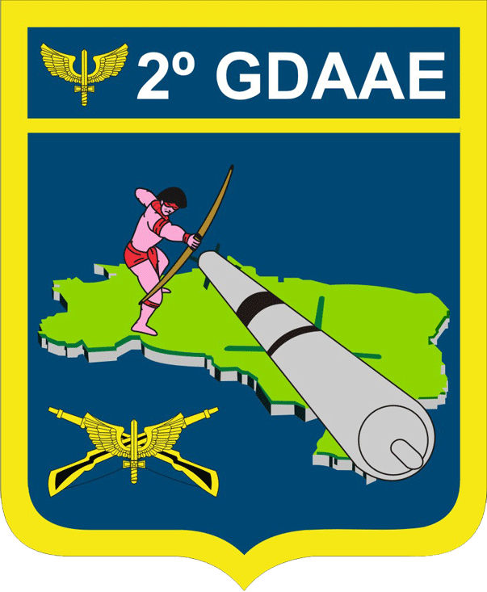

Gestão de Macrociclo e Controle de Efetivo

Volume alto. Adequação da técnica e base aeróbica. Ritmo controlado.
Adição de anilhas (5-10kg). Tiros curtos de maior velocidade.
Redução de volume, simulação de teste real. Pico de performance.
| Militar | Assiduidade | Frequência | Ação na Data | Histórico |
|---|